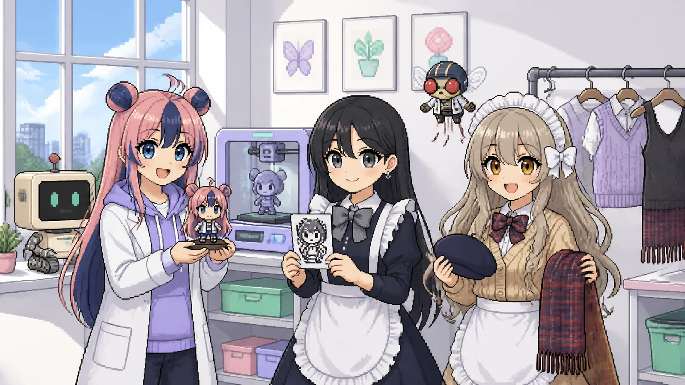
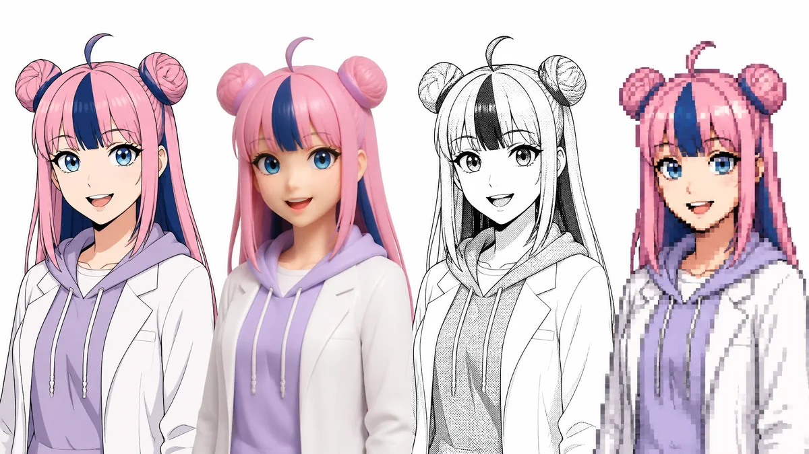
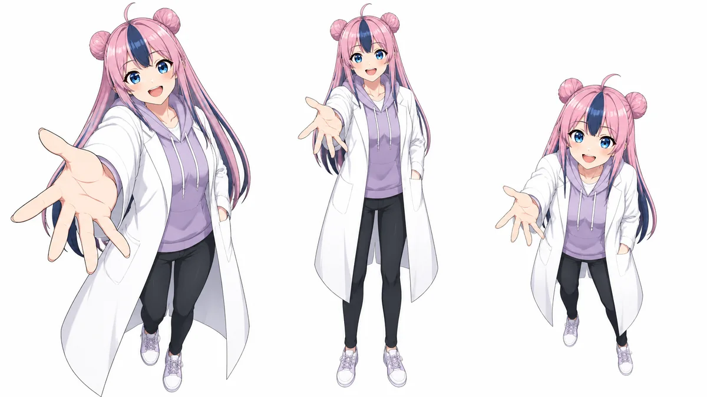
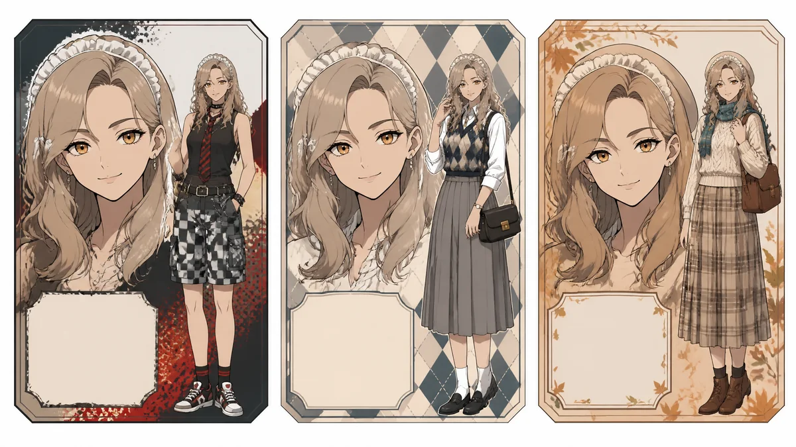
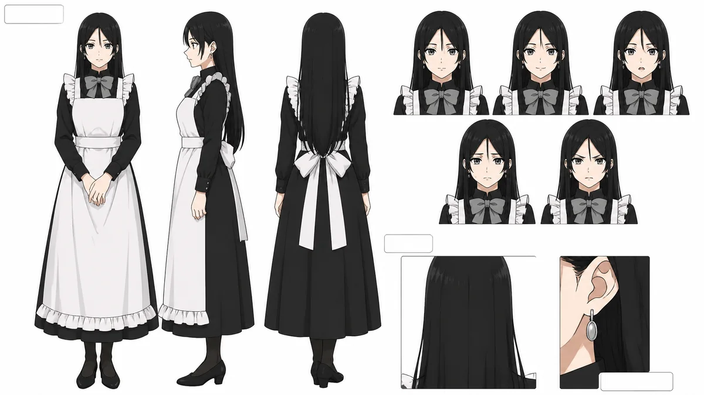
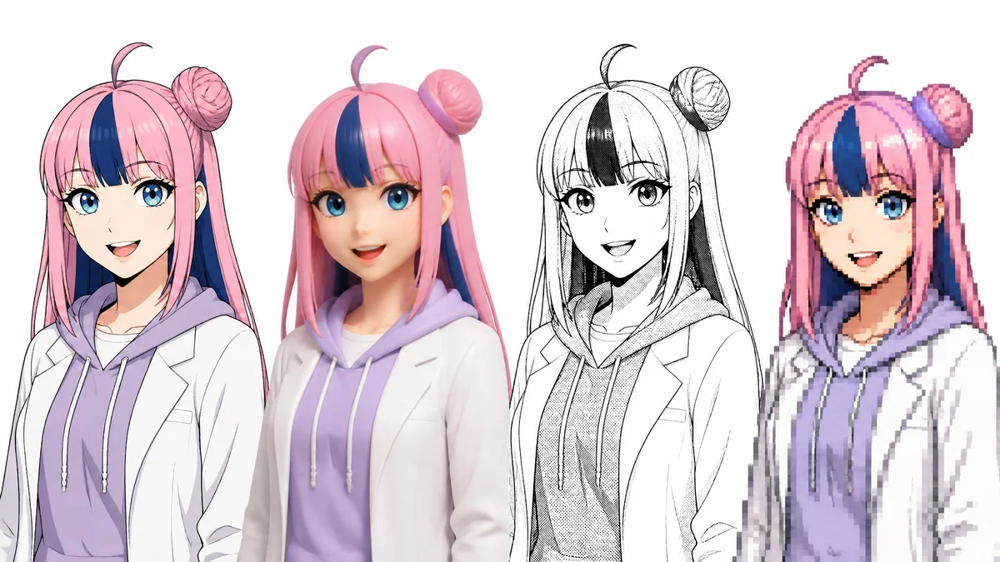
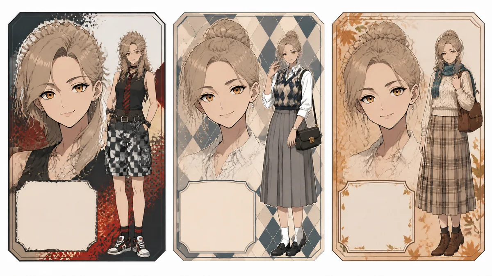
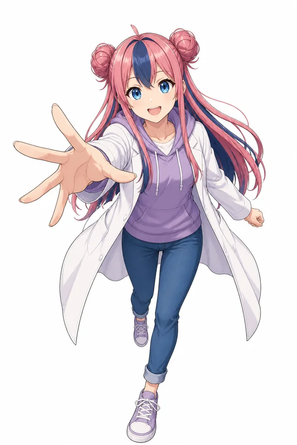
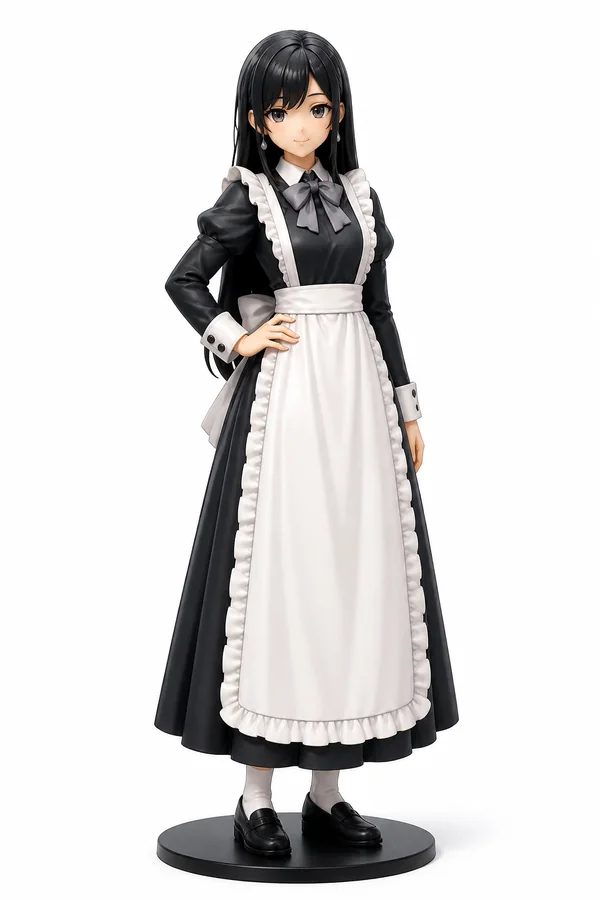
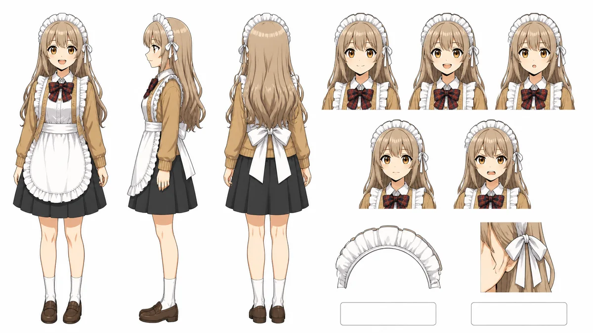

오늘의 과제

박사오늘은 재료와 옷이다. 셋 모두 3D 피규어, 광고 포스터, 잡지 포스터 버전을 만들어 보자. 흑백은 3부에서 이미 다녀왔다.

주판봇재료가 바뀌면 디자인도 새로 하면 됩니다! 3D는 3D답게!

초파리 연구원그러면 버전마다 다른 사람이야. 남길 것부터 목록으로 적자.

모아저는 머리띠와 왼쪽 리본이요! 그건 어느 버전이든 꼭 있어야 해요.

모델은 세 사람 모두입니다. 주판봇은 재료를 바꿀 때마다 캐릭터를 새로 디자인합니다. 초파리는 고정값 목록을 먼저 만들고 재료와 옷만 갈아 끼웁니다. 어느 쪽이 '같은 사람의 여러 버전'일까요?
그림 실력·코드·수식을 몰라도 됩니다. 실험을 눌러 보며 따라오세요.
같은 하루를 셀 애니·부드러운 3D·먹선·픽셀로 그려, 재료마다 바뀌는 것과 남는 것을 나눕니다
같은 동요를 실로폰과 리코더로 연주하면 소리는 달라도 아이들이 바로 따라 부릅니다. 멜로디가 고정값입니다.
버추얼 캐릭터는 2D 일러스트와 3D 모델이 함께 쓰입니다. 3D 모델을 만들 때 2D의 머리 실루엣·눈 색·장식 위치를 그대로 옮기고, 선 대신 명암과 질감으로 형태를 냅니다.


재료가 바꾸는 것은 선·명암·질감이고, 남는 것은 실루엣·색·장식입니다.
픽셀처럼 해상도가 낮은 재료에서는 작은 장식이 사라지므로 고정값을 크고 단순하게 정해 두면 유리합니다.
작업에서는 재료를 바꾸기 전에 고정값 목록(실루엣·색·장식)을 먼저 적습니다(4단계 설정 시트).

AI로 하루의 3D 버전을 만들었더니 머리색이 연보라로, 번이 하나로 바뀌었습니다. 3D답게 바뀐 거니 괜찮을까요?
고정값이 바뀌었습니다. 'keep exactly: pink hair with navy streaks, two round buns on top, lavender hoodie; only the rendering changes to soft 3D'처럼 남길 것과 바꿀 것을 나눠 적으세요.
눈높이·올려다보기·내려다보기와 넓은 렌즈를 바꿔, 같은 캐릭터·같은 옷이 광고·셀카·영웅 장면으로 바뀌는 것을 봅니다
단체 사진을 찍을 때 사진사가 의자에 올라 조금 내려다보면 모두의 얼굴이 고르게 나옵니다.
게임 광고 포스터는 여러 캐릭터가 달려오는 장면을 낮은 카메라와 넓은 렌즈로 잡아 속도감을 내고, 계절 일러스트는 뒤돌아보는 인물을 넓은 렌즈로 가까이 잡아 배경까지 담습니다.
올려다보기는 당당함·영웅 인상, 내려다보기는 귀엽고 친근한 인상, 눈높이는 설명용 기본입니다.
넓은 렌즈는 가까운 것(내민 손, 얼굴)을 크게, 먼 것을 작게 보여 속도감과 현장감을 줍니다.
작업에서는 시리즈마다 카메라 높이와 렌즈를 하나로 정해 두고, 옷 테마만 바꿉니다(3단계).

AI가 만든 포스터 다섯 장의 카메라 각도가 모두 달라 나란히 놓으니 어수선합니다. 어떻게 할까요?
카메라를 문장으로 고정하세요. 'low camera angle looking up, wide-angle lens, full body'처럼 높이와 렌즈를 매번 같은 말로 적습니다.
같은 모아에게 실험실·펑크·프레피·Y2K·계절 코디를 입히고, 잡지 포스터 구성(큰 얼굴 + 전신 + 한 줄 문구 자리)으로 묶습니다
옷장에서 같은 사람이 계절마다 다른 옷을 꺼내 입어도, 사진첩 속 사람은 늘 같은 사람입니다.
잡지풍 캐릭터 포스터는 한 화면에 큰 얼굴 클로즈업, 전신 코디, 테마 무늬 배경, 문구 자리를 겹쳐 둡니다. 테마(펑크·프레피·Y2K·가을 코디)가 바뀌어도 머리 모양과 장식은 그대로라 시리즈로 묶입니다.

옷 테마가 바뀌어도 머리 실루엣과 장식이 남으면 같은 캐릭터의 베리에이션으로 읽힙니다.
옷은 '체크 니트 조끼, 무릎 아래 주름치마, 성인 20대'처럼 소재·핏·나이를 함께 적어 나이 쏠림을 막습니다.
포스터는 큰 얼굴·전신·문구 자리 세 요소로 구성하고, 그림 안 글자는 나중에 직접 넣습니다.

AI가 모아의 프레피 포스터에 포스터 이름 같은 큰 글자와 문구를 넣어 줬습니다. 멋있는데 써도 될까요?
그림 안 글자는 철자가 틀리거나 뜻이 엉뚱한 경우가 많습니다. 'leave a blank area for the title, no text'로 문구 자리만 비워 받고, 글자는 디자인 도구에서 직접 넣으세요.
고정값(실루엣·색·장식·비율)과 바뀌는 값(화풍·등신·표정·옷)을 한 장에 나눠 적으면, 어떤 베리에이션을 해도 같은 캐릭터로 돌아옵니다
모둠 숙제를 나눠 할 때 '글자 크기·색·제목 위치'를 먼저 정해 두면 각자 만들어도 한 권처럼 보입니다.
캐릭터 설정 시트에는 프로필, 정면·옆·뒤·비스듬히 전신, 얼굴 각도, 표정 5종, 머리·눈·손 확대, 일상복 장면을 한 장에 넣습니다. AI로 베리에이션을 만들 때 이 시트를 참고 그림으로 매번 첨부합니다.

고정값이 늘수록 다섯 버전의 일관성이 올라갑니다. 다섯 개를 모두 고정하면 화풍이 달라도 같은 캐릭터로 읽힙니다.
'성인 나이'를 고정값에 넣으면 SD·큰 눈·옷 이름 때문에 생기는 나이 쏠림을 함께 막습니다.
작업에서는 설정 시트를 먼저 만들고, 베리에이션 요청마다 첨부합니다.

AI가 만들어 준 캐릭터 설정 시트에 '이름·키·성격' 자리가 영어 글씨로 가득 차 있는데 일부 글자가 깨져 있습니다. 써도 될까요?
그림 속 글씨는 깨지거나 틀리기 쉽습니다. 시트 그림은 'no text, blank label areas'로 받고, 프로필 글은 직접 적어 넣으세요. 그림 부분(각도·표정·부위)만 AI에게 맡깁니다.
이 부에서 배운 원리를 그림 생성 AI(Genspark 등)로 직접 확인합니다. A는 이 페이지 그림을 실제로 만든 프롬프트, B는 원리를 하나 빼거나 바꾼 비교용 문장입니다.
참고 그림 내려받기: haru_anime_base · sia_anime_base · moa_anime_base · haru_sheet · sia_sheet · moa_sheet · doctor_sheet · fruitfly_sprites_6 · jupanbot_ref_genspark_v0 · pixel_style_ref_prev_cover
셀·3D·먹·픽셀로 재료만 바꾸고 실루엣·색·장식이 남는지 확인합니다.
첨부: sia·haru·moa anime_base와 sheet
Illustration, wide 16:9. Art style: four panels: (1) clean modern anime illustration, confident lineart, two-tone cel shading, natural adult proportions; (2) soft 3D render like a smooth vinyl figure, no outlines; (3) black and white ink line drawing with screentone dots; (4) 16-bit pixel art with visible square pixels. The silhouette, hair color, two buns and lavender hoodie stay the same in all four Match the attached reference images exactly for identity (hair shape and color, eye color, accessories). All characters are adults in their twenties (the Professor is an adult man in his thirties); modest outfits exactly as described. Only the drawing style changes between panels; the person stays the same. Four chest-up portraits of the same Haru (adult lab assistant, long straight pink hair with navy streaks and a thick navy streak down the center of the bangs, two round hair buns on top, small ahoge, big blue eyes), wearing lavender hoodie with white drawstrings over a white t-shirt, open white knee-length lab coat, cheerful smile, same pose, side by side. Plain white background behind the panels. No text, no letters, no numbers, no calligraphy, no seals or stamps, no logos, no watermark, no revealing clothing, not childlike, no school uniform, not resembling any existing anime, comic or game character, do not imitate any specific artist or studio.
Same image, keep the same framing. Change only: in the 3D and pixel panels redesign her hair (one bun instead of two, lighter purple color). Still no text.

실제 결과: B에서 번을 하나로 바꾸라고 한 것이 3D·픽셀뿐 아니라 네 장 모두에 적용됐습니다. 고정값이 바뀌면 재료와 상관없이 다른 사람이 된다는 점은 보입니다.
옷 테마만 바꾼 포스터 세 장에서 머리띠·왼쪽 리본이 남는지, 글자 자리가 비어 있는지 확인합니다.
첨부: sia·haru·moa anime_base와 sheet
Illustration, wide 16:9. Art style: clean modern anime illustration, confident lineart, two-tone cel shading, natural adult proportions; outfits: (1) punk — black sleeveless top with a black-and-red striped tie, checkered cargo shorts to the knee, sneakers; (2) preppy — argyle knit vest over a white shirt, below-the-knee pleated gray skirt, loafers, small handbag; (3) autumn outfit — cream cable-knit sweater, teal plaid scarf, beige beret, long plaid skirt, leather backpack, autumn leaves pattern. She keeps the white frilled headband and the white ribbon over her LEFT ear in all three. Adult woman in her twenties, not a school uniform Match the attached reference images exactly for identity (hair shape and color, eye color, accessories). All characters are adults in their twenties (the Professor is an adult man in his thirties); modest outfits exactly as described. Only the drawing style changes between panels; the person stays the same. Three magazine-style character posters of the same Moa (adult maid intern, long ash-beige wavy hair, white frilled maid headband with a white ribbon over her LEFT ear, amber eyes), each poster combining a large face close-up, a full-body outfit pose and a themed pattern background, with an empty blank area for a title (no text). Plain white background behind the panels. No text, no letters, no numbers, no calligraphy, no seals or stamps, no logos, no watermark, no revealing clothing, not childlike, no school uniform, not resembling any existing anime, comic or game character, do not imitate any specific artist or studio.
Same image, keep the same framing. Change only: in each poster also change her hairstyle and remove the headband to match the theme (spiky hair for punk, a bun for preppy). Still no text.

실제 결과: B에서 프레피·가을 포스터는 머리띠가 사라지고 올림머리로 바뀌어 모아로 알아보기 어려웠습니다. 펑크는 머리띠가 남았습니다. A의 세 장은 머리띠를 지켰지만, 왼쪽 귀 위 리본은 작아서 잘 보이지 않습니다.
같은 대화에서 차이가 약하면 새 대화에서 처음부터 만들어 보세요. 작은 변화는 도구가 원래 모양을 지키려 해 약하게 나오는 일이 많습니다.
이 부의 원리를 내 손으로 프롬프트에 옮겨 보는 과제 3개입니다. 뒤의 과제일수록 1차 그림에서 실제로 겪은 문제(같은 대화에서 차이가 약함, 고정값이 쉽게 무너짐, SD가 어려 보임)를 피하는 방법을 담았습니다. 과제마다 목표 → 순서 → 넣을 프롬프트 → 확인할 것 → 예상 결과 → 자주 생기는 문제 순서로 적었습니다. 예상 결과 그림은 아래 프롬프트로 실제로 만든 그림입니다. 요청과 다르게 나온 곳은 '실제 결과'에 그대로 적었습니다. 결과는 매번 조금씩 다르니, 그림이 똑같지 않아도 '확인할 것'이 맞으면 성공입니다.
목표하루의 실험실 차림은 그대로 두고 카메라 높이와 렌즈만 적어, 당당한 광고 포스터 구도가 나오는지 확인합니다.
왜 이 연습인가카메라를 적지 않으면 같은 시리즈 그림도 각도가 매번 달라집니다(6부 2단계). 옷은 고정하고 카메라 두 손잡이만 문장으로 적습니다.
첨부할 참고 그림: refs/haru_anime_base.png, refs/haru_sheet.png — 참고 그림은 위 직접 만들어 보기에서 내려받을 수 있습니다.
Illustration, vertical 2:3. Art style: clean modern anime illustration, confident lineart, two-tone cel shading, natural adult proportions; low camera angle looking up, wide-angle lens so the reaching hand looks large and close, sky in the background, empty blank area at the top for a title Match the attached reference images exactly for identity (hair shape and color, eye color, accessories). All characters are adults in their twenties (the Professor is an adult man in his thirties); modest outfits exactly as described. Only the drawing style changes between panels; the person stays the same. Full-body poster illustration of Haru (adult lab assistant, long straight pink hair with navy streaks and a thick navy streak down the center of the bangs, two round hair buns on top, small ahoge, big blue eyes), wearing lavender hoodie with white drawstrings over a white t-shirt, open white knee-length lab coat, running toward the viewer and reaching one hand forward, energetic smile. Plain white background. No text, no letters, no numbers, no calligraphy, no seals or stamps, no logos, no watermark, no revealing clothing, not childlike, no school uniform, not resembling any existing anime, comic or game character, do not imitate any specific artist or studio.

실제 결과: 부분 성공. 내민 손이 크게 보여 넓은 렌즈 느낌은 나왔지만, 카메라가 올려다보는 쪽이 아니라 약간 내려다보는 쪽이고 하늘 배경도 빠졌습니다. 'camera placed near the ground' 한 줄을 다시 넣어 보세요.
| 문제 | 이렇게 고칩니다 |
|---|---|
| 눈높이 정면 구도로 나온다 | 'Same image. Change only: camera placed near the ground looking up.' |
| 손이 이상하게 길어졌다 | 'wide-angle but natural hand size, slightly closer to the camera'로 낮춥니다. |
| 제목 글자가 들어갔다 | 'no text, leave the area blank'를 덧붙입니다. |
더 해 보기같은 프롬프트의 카메라만 'high camera angle looking down'으로 바꿔, 귀여운 인상과 비교해 보세요.
목표시아를 매끈한 3D 피규어로 받되, 고정값 문장을 재료 문장보다 앞에 적어 머리·장식이 바뀌지 않게 합니다.
왜 이 연습인가1차 그림에서 재료를 바꾸는 비교 요청은 번 개수 같은 고정값까지 바꿨습니다(6부 직접 만들기 B). 남길 것을 먼저, 바꿀 것을 나중에 적습니다.
첨부할 참고 그림: refs/sia_anime_base.png, refs/sia_sheet.png — 참고 그림은 위 직접 만들어 보기에서 내려받을 수 있습니다.
Illustration, vertical 2:3. Keep exactly first: Sia's long straight jet-black hair, no headdress, small silver earrings, gray eyes, charcoal-black maid dress with a large gray bow and a long white frilled apron. Then change only the rendering: a smooth vinyl collectible figure of this adult woman, standing on a small round base, soft studio lighting, no outlines. Plain white background. No text, no letters, no numbers, no calligraphy, no seals or stamps, no logos, no watermark, no revealing clothing, not childlike, no school uniform, not resembling any existing anime, comic or game character, do not imitate any specific artist or studio.

실제 결과: 성공. 고정값을 맨 앞에 적었더니 재료가 피규어로 바뀌어도 머리·장식·옷이 모두 남았습니다.
| 문제 | 이렇게 고칩니다 |
|---|---|
| SD 비율이 됐다 | 'normal adult proportions, not chibi'. |
| 머리가 짧아졌다 | 고정값 문장을 다시 맨 앞에 둡니다. |
| 상자에 상표 글씨가 생겼다 | 'no box, no text, no logo'. |
더 해 보기같은 문장의 재료 부분만 '16-bit pixel art'로 바꿔 새 대화에서 만들고, 두 장의 고정값을 비교해 보세요.
목표모아의 설정 시트(정면·옆·뒤 전신, 표정 다섯, 머리띠·리본 확대)를 받아, 앞으로 베리에이션을 요청할 때 첨부할 기준으로 삼습니다.
왜 이 연습인가설정 시트가 있으면 어떤 베리에이션을 해도 같은 캐릭터로 돌아옵니다(6부 4단계). 다만 시트 안 이름표 글씨는 깨지기 쉬우니 비워 두고 직접 적습니다.
첨부할 참고 그림: refs/moa_anime_base.png, refs/moa_sheet.png — 참고 그림은 위 직접 만들어 보기에서 내려받을 수 있습니다.
Illustration, wide 16:9. Art style: clean modern anime illustration, confident lineart, two-tone cel shading, natural adult proportions Match the attached reference images exactly for identity (hair shape and color, eye color, accessories). All characters are adults in their twenties (the Professor is an adult man in his thirties); modest outfits exactly as described. Only the drawing style changes between panels; the person stays the same. A clean character model sheet of Moa (adult maid intern, long ash-beige wavy hair, white frilled maid headband with a white ribbon over her LEFT ear, amber eyes), wearing camel knit cardigan over a white blouse, red and navy plaid bow tie, white frilled apron: front, side and back full-body views on the left; five small face expressions (neutral, smile, surprised, troubled, angry) on the upper right; close-ups of the frilled headband and the white ribbon over her LEFT ear on the lower right; small blank label boxes with no text. Plain white background. No text, no letters, no numbers, no calligraphy, no seals or stamps, no logos, no watermark, no revealing clothing, not childlike, no school uniform, not resembling any existing anime, comic or game character, do not imitate any specific artist or studio.

실제 결과: 부분 성공. 세 방향 전신·표정 다섯·장식 확대·빈 이름표까지 양식은 잘 나왔지만, 치마가 무릎 위 검은 주름치마와 흰 양말로 바뀌어 학생복 느낌이 납니다. 옷도 고정값으로 'long skirt below the knee'처럼 적어야 합니다.
| 문제 | 이렇게 고칩니다 |
|---|---|
| 뒷모습에서 리본이 반대쪽이다 | 'from behind, the ribbon appears on the left side of the picture'를 덧붙입니다. |
| 이름표에 글씨가 생겼다 | 'blank boxes, no letters'. |
| 표정마다 얼굴이 다르다 | 'same face in all five expressions'. |
더 해 보기같은 양식으로 하루·시아 시트도 만들어 세 사람 시트를 나란히 두세요.
| 항목 | 주판봇 | 초파리 |
|---|---|---|
| 닮음(버전끼리 같은 사람인가) | 4 | 9 |
| 원리(고정값·밝기·옷 규칙) | 3 | 9 |
| 자연스러움 | 6 | 8 |
| 합계 | 13 | 26 |


점수는 이야기 속 예시입니다. 실제 그림을 평가한 값이 아닙니다.
| 주제 | 한 줄 | 작업에서는 |
|---|---|---|
| 재료 | 선·명암·질감은 바뀌고 실루엣·색·장식은 남는다 | 고정값을 크고 단순하게 |
| 카메라 | 올려다보기는 당당, 내려다보기는 귀여움, 넓은 렌즈는 현장감 | 시리즈마다 카메라를 고정한다 |
| 옷 테마 | 옷만 바꾸고 머리·장식·얼굴은 고정 | 옷은 소재·핏·나이로 적는다 |
| 설정 시트 | 고정값과 바뀌는 값을 한 장에 | 베리에이션 요청마다 첨부 |
이 페이지에 나온 개념·방법·비유·쓰임을 모았습니다. 검색하고, "설명 보러 가기"로 본문에 돌아갑니다.
지식 색인을 출처와 함께 파일로 내려받습니다. 서지 관리는 BibTeX·RIS, 온톨로지 편집은 Turtle, 그래프 도구는 CSV, 여러 페이지 합치기는 kg.json입니다.